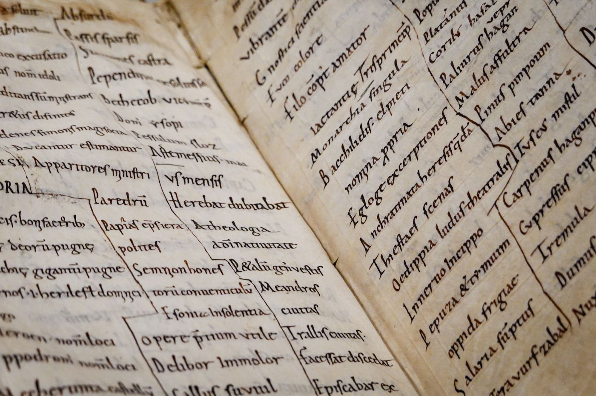

The illuminator
Eleanor Vane came to illumination the way most people reach it now: sideways. Evening classes in italic calligraphy while she worked days in a York bookshop taught her the letters. Then a facsimile Book of Hours, borrowed for a winter, taught her that the letters were the least of it — the gold was the point, and the gold had rules, and the rules were six hundred years old and still worked.
She spent two years apprenticed to a working manuscript illuminator, learning the bench skills in the order they are used: cutting a quill, ruling a skin, slaking plaster for gesso, grinding colour, laying leaf. A decade at her own bench in York followed. The studio takes commissions only — vows, certificates, charters, book plates, whole leaves — and takes two at a time, because raised gesso dries at its own pace and a queue of six is a queue of disappointments.
Two working rules are worth knowing before you write. Recreations of historical work are always signed and dated on the verso, so they can never be sold on as the real thing — see The Missing Leaf. And the studio does not offer printed “illuminated” certificates or gold-effect foil. If it shines, it is gold; if it is gold, it was laid by hand.
What the work is made of
The materials are the historical ones, bought as close to their sources as the modern trade allows, and each carries its handling note. This is the bench, in a table.
| Kind | Material | Notes from the bench |
|---|---|---|
| Support | Calfskin vellum | Stretched, limed and scraped in the old way. Warm, springy and unforgiving — a mistake is scraped out with a knife, never erased. |
| Support | Cotton paper | 100% cotton rag, hot-pressed. The honest modern support: takes handling well, lies flat in a frame, costs less. |
| Ink | Iron-gall ink | Made in the studio from oak galls, iron salts and gum arabic. Writes pale, then darkens as it oxidises — the ink of the medieval page. Mildly corrosive over centuries, so it is mixed weak for paper. |
| Ink | Carbon ink | Lampblack in gum arabic. Chemically inert and unfading; used where iron-gall's slow bite would be a risk. |
| Gold | Loose leaf, 23.5 ct | Laid on raised gesso and burnished with a dog-tooth agate — the raised, mirror-bright gold of the best initials. |
| Gold | Shell gold | Powdered gold bound in gum arabic, kept in a shell as the old painters kept it. Painted on, for lines too fine for leaf. |
| Pigment | Ultramarine | Ground lapis lazuli — historically dearer than gold. Laid sparingly, and kept for the most important passages of a piece. |
| Pigment | Vermilion | Mercury sulfide: the rubricator's red, brilliant and opaque. Ground and handled with care. |
| Pigment | Verdigris | Copper green, made by corroding copper over vinegar as the old recipes direct. Beautiful, and dangerous to its neighbours — it can eat through paper, so it is isolated and used thin. |
| Pigment | Red lead & ochres | The working colours: oranges, earths and underpainting for borders and foliage. |
Keeping illuminated work
Every piece leaves the studio with these notes in writing. They are the difference between a leaf that lasts a generation and one that lasts five centuries — the pigments on this page survived the Middle Ages under roughly these conditions.
- LightHang out of direct sun and away from spotlights. Pigment and vellum both fade and cockle under strong light; the old books lived in the dark between readings, and a framed leaf wants the same courtesy. A wall that never takes the sun is ideal.
- HumidityKeep the room near 40–55% relative humidity. Bathrooms and kitchens steam a leaf; the wall above a radiator dries and curls it.
- FramingAcid-free mount, and a spacer so the surface never touches the glass — raised gesso will stick to glazing in a warm room. Museum glass earns its cost on gilded work.
- HandlingBy the edges, with clean, dry hands. Never laminate, never spray, and never try to flatten a cockled leaf yourself — write to the studio instead.
- StorageUnframed pieces live flat, interleaved with acid-free tissue, in the dark. Never rolled.

- Studio
- York, England
- Working in
- Four hands; vellum and cotton paper
- Commissions
- Two at a time — spring 2027 open
- Recreations
- Always signed and dated on the verso
- Not offered
- Printed certificates, foil “gilding”, rush work
Commission a piece
Bring the text — vows, a poem, a name for a bookplate, a certificate that deserves better than a printer.